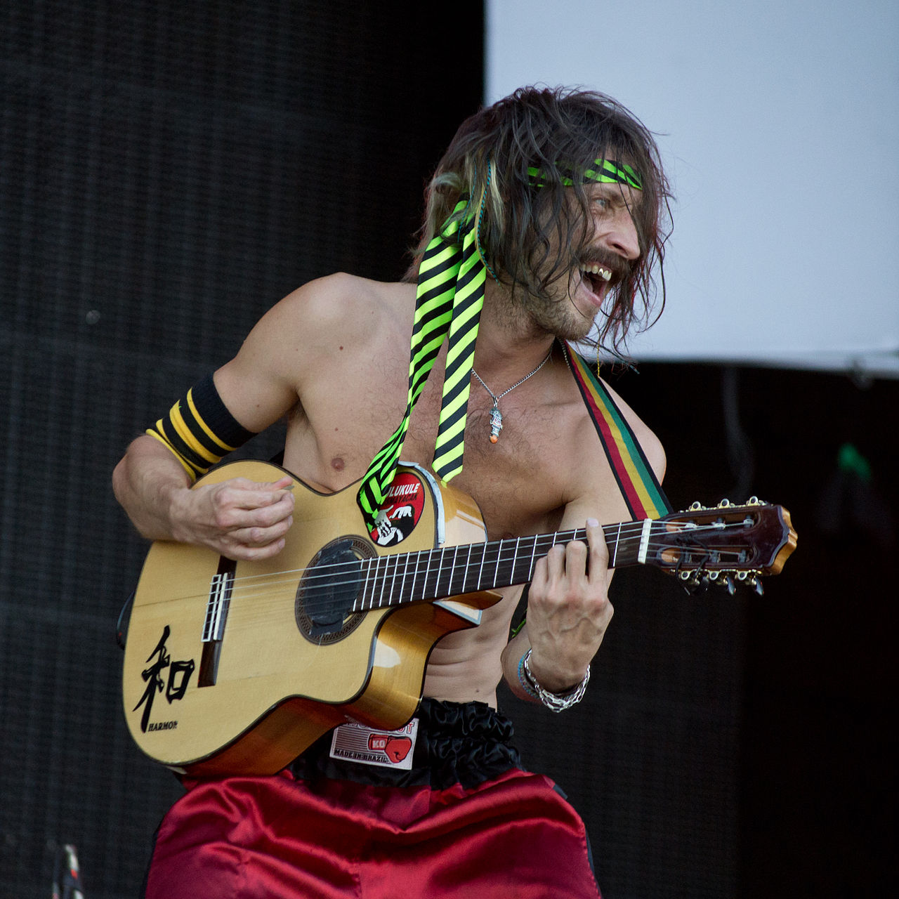

Background
 Gogol Bordello is an American punk band from the Lower East Side of Manhattan, formed in 1999 by musicians from all over the world and known for theatrical stage shows and persistent touring. Much of the band's sound is inspired by Gypsy music mixed with punk and dub. The band incorporates accordion and violin (and on some albums, saxophone). The band has appeared in a number of popular films, most notably in 2005's Everything Is Illuminated in which the lead singer, Eugene Hütz, co-starred with Elijah Wood in a dramedy and adventure story about the Nazi purges in Ukraine. The entire group was present for one shot in which they played a brass band in a set that included the "Star-Spangled Banner". They also played the traditional Yiddish song "Bublitschki". Gogol Bordello contributed the song "Start Wearing Purple" to the film's score. The band also has their own documentary called Gogol Bordello Non-Stop. This documentary was filmed in 2008 and follows the band's progress. In 2012, the band recorded a song titled Let's Get Crazy for Coca-Cola's Euro 2012 advertising campaign.
Band Member Nationalities
- Ukraine
- Russia
- Ethiopia
- Ecuador
- United States
- Belarus
- Scotland
Current Members